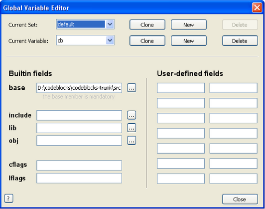
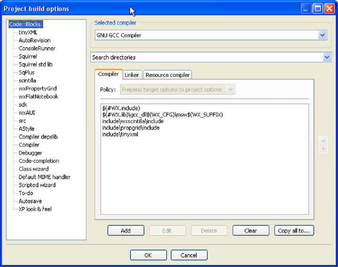

CodeBlocks differentiates between several types of variables. These types serve the purpose of configuring the environment for creating a program, and at the same of improving the maintainability and portability. Access to the CodeBlocks variables is achieved via $<name>.
CodeBlocks treats the following functionally identical character sequences inside pre-build, post-build, or build steps as variables:
Variable names must consist of alphanumeric characters and are not case-sensitive. Variables starting with a single hash sign (#) are interpreted as global user variables (see Variable Expansion 3.7 for details). The names listed below are interpreted as built-in types.
Variables which are neither global user variables nor built-in types, will be replaced with a value provided in the project file, or with an environment variable if the latter should fail.
The variables listed here are built-in variables of CodeBlocks. They cannot be used within source files.
The filename of the currently compiled project.
The name of the currently compiled project.
The common top-level directory of the currently compiled project.
The filename of the file opened in the currently active editor.
the directory containing the currently active file (relative to the common top level path).
The base name (without extension) of the currently active file.
The extension of the currently active file.
A string containing the names of all files in the current project.
The filename of the makefile.
The path to the currently running instance of CodeBlocks.
The ’shared’ directory of the currently running instance of CodeBlocks.
The plugins directory of the currently running instance of CodeBlocks.
The output file of a specific target.
The output directory of a specific target.
The output file’s base name (no path, no extension) of a specific target.
The output directory of the current target.
The object directory of the current target.
The name of the current target.
The output file of the current target.
The output file’s base name (no path, no extension) of the current target.
The build tool executable (compiler, linker, etc) of the current target.
The system language in plain language.
The character encoding in plain language.
Current date in the form YYYYMMDD (for example 20051228)
Current date in the form YYYY-MM-DD (for example 2005-12-28)
Timestamp in the form YYYY-MM-DD-hh.mm (for example 2005-12-28-07.15)
] Timestamp in the form YYYY-MM-DD-hh.mm.ss (for example 2005-12-28-07.15.45)
Plain language day of the week (for example ’Wednesday’)
These are identical to the preceding types, but are expressed relative to UTC.
This variable tosses a virtual coin (once per invocation) and returns 0 or 1.
A 16-bit positive random number (0-65535)
The variable are substituted through the command of the operating system.
Copy command for files.
Remove command for files.
Move command for files.
Make directory command.
Remove directory command.
Conditional evaluation will resolve to its true clause if
Conditional evaluation will resolve to its false clause if
Example
For example if you are using several platforms and you want to set different parameters depending on the operating system. In the following code the script commands of [[ ]] are evaluated and the <command> will be executed. This could be useful in a post-built step.
For maximum flexibility, you can embed scripts using the [[ ]] operator as a special case of variable expansion. Embedded scripts have access to all standard functionalities available to scrips and work pretty much like bash backticks (except for having access to CodeBlocks namespace). As such, scripts are not limited to producing text output, but can also manipulate CodeBlocks state (projects, targets, etc.).
Example with Backticks
The expression in backticks returns a list of all executables *.elf in any subdirectories. The result of this expression can be used directly by objdump. Finally the output is piped to a file named name.dis. Thus, processes can be automatted in a simple way without having to program any loops.
Example using Script
The script text is replaced by any output generated by your script, or discarded in case of a syntax error.
Since conditional evaluation runs prior to expanding scripts, conditional evaluation can be used for preprocessor functionalities. Built-in variables (and user variables) are expanded after scripts, so it is possible to reference variables in the output of a script.
inserts the title of the active project into the command line.
Access to name of the compiler executable.
Access to name of the linker executable.
Compiler flags
Linker flags
Compiler include paths
Linker include paths
Linker libraries
Source file (full name)
Source file directory without file name and file name extension.
Source file name without path info and file name extension.
Directory of executable without file name and file name extension.
File name of executable without path and file name extension.
File name extension of executable without path and file name.
Object file
Executable output file
Object Output Directory
Working as a developer on a project which relies on 3rd party libraries involves a lot of unnecessary repetitive tasks, such as setting up build variables according to the local file system layout. In the case of project files, care must be taken to avoid accidentially committing a locally modified copy. If one does not pay attention, this can happen easily for example after changing a build flag to make a release build.
The concept of global compiler variables is a unique new solution for CodeBlocks which addresses this problem. Global compiler variables allow you to set up a project once, with any number of developers using any number of different file system layouts being able to compile and develop this project. No local layout information ever needs to be changed more than once.
Global compiler variables in CodeBlocks are discriminated from per-project variables by a leading hash sign. Global compiler variables are structured; every variable consists of a name and an optional member. Names are freely definable, while some of the members are built into the IDE. Although you can choose anything for a variable name in principle, it is advisable to pick a known identifier for common packages. Thus the amount of information that the user needs to provide is minimised. The CodeBlocks team provides a list of recommended variables for known packages.
The member base resolves to the same value as the variable name uses without a member (alias).
The members include and lib are by default aliases for base/include and base/lib, respectively. However, a user can redefine them if another setup is desired.
It is generally recommended to use the syntax $(#variable.include) instead of $(#variable)/include, as it provides additional flexibility and is otherwise exactly identical in functionality (see Variable Expansion 3.12.1 and Global Variable Environment 3.1 for details).
The members cflags and lflags are empty by default and can be used to provide the ability to feed the same consistent set of compiler/linker flags to all builds on one machine. CodeBlocks allows you to define custom variable members in addition to the built-in ones.
|

|
CodeBlocks will detect the most obvious cases of recursive definitions (which may happen by accident), but it will not perform an in-depth analysis of every possible abuse. If you enter crap, then crap is what you will get; you are warned now.
Examples
Defining wx.include as $(#wx)/include is redundant, but perfectly legal Defining wx.include as $(#wx.include) is illegal and will be detected by CodeBlocks Defining wx.include as $(#cb.lib) which again is defined as $(#wx.include) will create an infinite loop
All you need to do for using global compiler variables is to put them in your project! Yes, it’s that easy.
When the IDE detects the presence of an unknown global variable, it will prompt you to enter its value. The value will be saved in your settings, so you never need to enter the information twice.
If you need to modify or delete a variable at a later time, you can do so from the settings menu.
Example
|

|
The above image shows both per-project and global variables. WX_SUFFIX is defined in the project, but WX is a global user variable.
Sometimes, you want to use different versions of the same library, or you develop two branches of the same program. Although it is possible to get along with a global compiler variable, this can become tedious. For such a purpose, CodeBlocks supports variable sets. A variable set is an independent collection of variables identified by a name (set names have the same constraints as variable names).
If you wish to switch to a different set of variables, you simply select a different set from the menu. Different sets are not required to have the same variables, and identical variables in different sets are not required to have the same values, or even the same custom members.
Another positive thing about sets is that if you have a dozen variables and you want to have a new set with one of these variables pointing to a different location, you are not required to re-enter all the data again. You can simply create a clone of your current set, which will then duplicate all of your variables.
Deleting a set also deletes all variables in that set (but not in another set). The default set is always present and cannot be deleted.
As stated above, writing $(#var.include) and $(#var)/include is exactly the same thing by default. So why would you want to write something as unintuitive as $(#var.include)?
Let’s take a standard Boost installation under Windows for an example. Generally, you would expect a fictional package ACME to have its include files under ACME/include and its libraries under ACME/lib. Optionally, it might place its headers into yet another subfolder called acme. So after adding the correct paths to the compiler and linker options, you would expect to #include <acme/acme.h> and link to libacme.a (or whatever it happens to be).